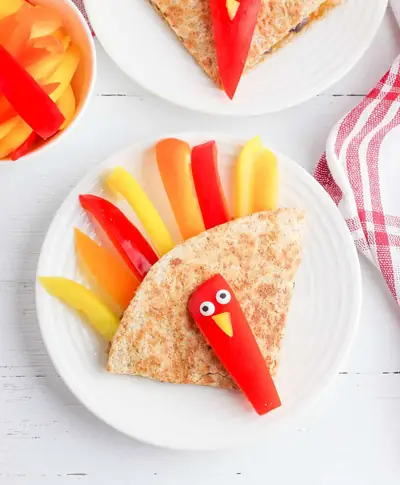

Thanksgiving Inspired Cheese Quesadilla (Kid-Friendly)

Ingredients
- 2 large whole wheat tortillas
- 1/4 cup canned black beans (rinsed & drained)
- 1/2 cup shredded Monterey Jack cheese (or Mexican cheese blend)
- 1 yellow bell pepper
- 1 orange bell pepper
- 1 red bell pepper
- 8 candy eyes
Steps
- Heat a large skillet or griddle over medium high heat.
- Spread the black beans evenly over one tortilla. Top the beans with the cheese. Place the second tortilla on top.
- Carefully place the quesadilla on the hot skillet sprayed with olive oil cooking spray, and cook for 5 to 6 minutes. When the cheese begins to melt, flip the quesadilla and cook on the other side for 4 to five minutes.
- When the quesadilla is browned on both sides, remove it to a plate to cool.
- While the quesadilla is cooling, slice each of the peppers into thin strips. Cut out four larger strips from the red pepper to serve as the turkey’s bodies. Cut four small triangles out of the yellow pepper to use as the turkey’s beak.
- Cut the quesadilla into four wedges. Push the pepper strips into the round part of each web to make the turkey’s feathers.
- Place the larger strip of red pepper on top of the quesadilla to make the turkey’s body. Decorate the pepper with a small yellow triangle for the beak and two candy eyes.
Recipe by Anjali Shah · The Picky Eater, from The Picky Eater. Saved here for personal use; the original has the full notes, tips and photos. Open original